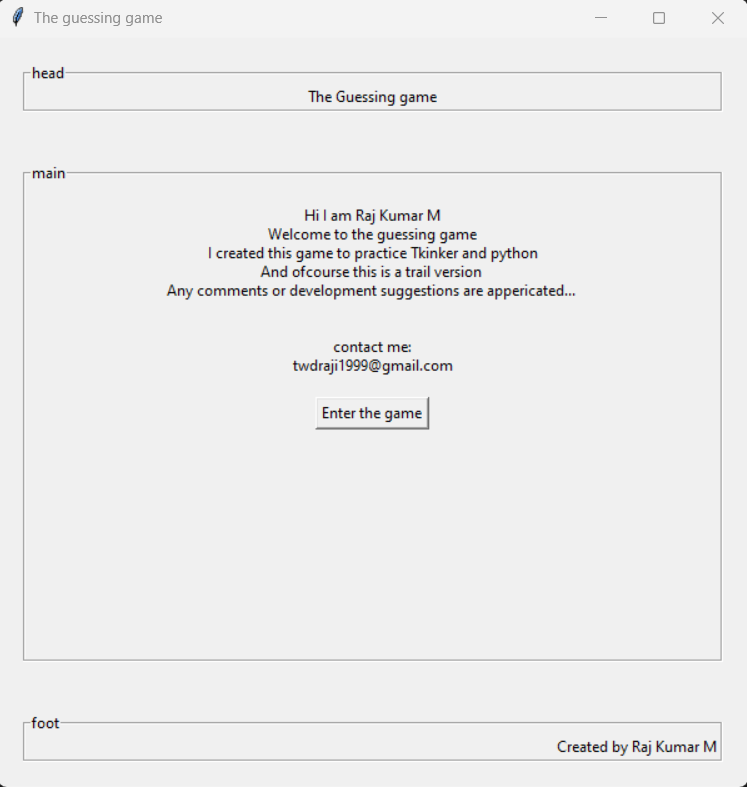
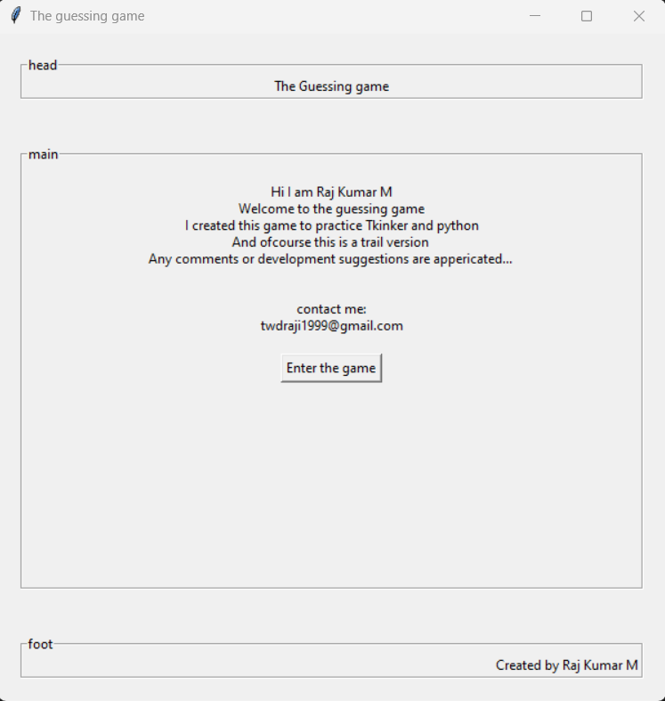
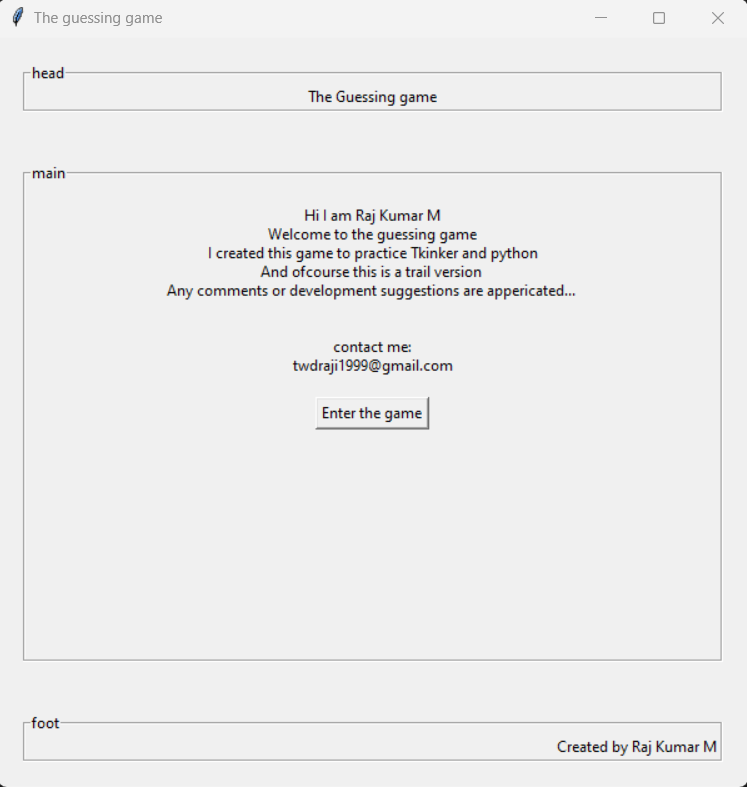

I am a student of Masters in Mining Engineering, My Intrest and
passion towards Front End Web Development and Softwares put me in
the pursuit of learning them
I built a few projects thorugh which I self-learnt and practiced my
skills in Web and Software developement, and have provided
descriptions and links of those projects in the projects section
I continued my perusal of Research interst and I have published my
research papers in International journals which is one of my
favourite achievement
I am from the state of Tamilnadu, kanchipuram is my native city, I
speak Tamil, English, Hindi, Kanada, and Telugu. The next section
briefs my acedamic and work profile in detail
My Acedamic Profile
Masters of Mining Engineering
2022 - 2025
University College of Engineering, Osmania University, Hyderabad
Bachelors of Mining Engineering
2016 - 2020
CGPA : 7.36
Acharya institute of Technology, Visveshwaraya Technological
University, Bangalore
This is a simple game that I developed using Python Tkinker

This is a Two player game where they try to find the hidden number,
A player will be given maximum of 5 points if he guessed the right
answer in the first try, and lose 1 point for every wrong answer.
Each player gets 3 turns to score maximum points and at the end the
player with the Higher score will be declared as winner
Little web games
This is a website that I developed for little funny games and still
working onit. I used only HTML, CSS and JS to built this web page
and hosted it on gh-pages
As I mentioned this web pages is under process. So far I have added
only one game in this web page, that is Rock Paper & scissor funny
game isn't??.
Development of slope Deformation Calculator Using Python, based of
Numerical Modelling Parametric study for slope stability analysis
and slope design
Aims to develop a python software that predicts slope's deformation
based on the results of Numerical Modelling parametric srudy using
ANSYS software.
Development of Advanced Slope Monitoring System in Opencast Mines
Using WSN and IoT
Aims to develop an advanced slope monitoring system using wireless
sensor networks, IoT and the Thingseak cloud platform to provide an
early warning in cases of slope failure.
Development of Trigger Aciton Response Plan for Advanced Slope
Monitoring System Using Python
Aims to develop a Triggered action response plan using python for an
advanced slope monitoring system.
Evaluating the Stability of Underground Coal Mine Pillars Using
Numerical Modelling
Aims to check the stability of rib pillars of underground coal
mining using the Flac numerical modelling software as a parametric
analysis.
My skill sets
Front-end & Software development
HTML | CSS | JS
Python | Tkinker
VS code | Pycharm
GitHub | Bitbucket
Mining Engineering
Solid Edge software
Slide | Phase2 | Geoslope | Ansys | Oasys
MS office
Tally - basic level
Electronics and Communication
Arduino IDE
WSN | IoT
Zigbee | XCTU
LORA | Ebyte
ThingSpeak
PythonAnywhere
Conference Papers
Overview of Real-time Slope Monitoring Using Wireless Sensor
Netwroks
National Seminar of Key Trends in Occupational Safety, Health and
Environment in Mining
May - 2023ESCI, Hyderabad
Wireless Sensor Netwroks and Real-time Slope Monitoring - A brief
Review
International Conference on Emerging Trends in Engineering
Atlantis pressApril - 2023UCE, OU, Hyderabad
Mining Beyond Earth: An Overview of its Importance
International Sysposium on Recent Tredns in Mining Industry
Journal of Mines, Metals and FulesAugust - 2022UCE, OU, Hyderabad
Research Papers
Evaluation of dump slope stability using Slide, Geoslope and Phase2
Software
Journal of Machines and Computing, Anapub Pubilication
Jan - 2022
Factors Affecting Slope Stability: A brief Review
International Journal of Innovative Science and Research Technology
May - 2022


 
